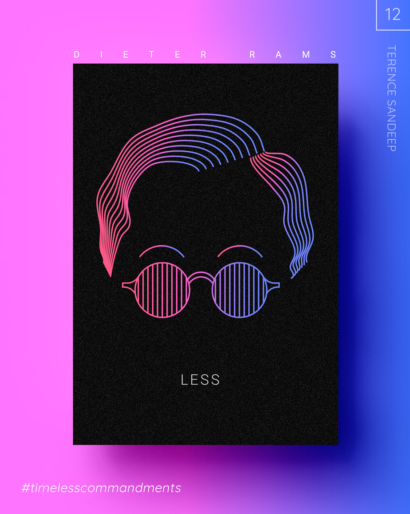

Ten Principles for Good Design by Dieter Rams

Rules 9 - 10
Is environmentally friendly. Design makes an important contribution to the preservation of the environment. It conserves resources and minimizes physical and visual pollution throughout the lifecycle of the product.
Is as little design as possible. Less, but better — because it concentrates on the essential aspects, and the products are not burdened with non-essentials. Back to purity, back to simplicity.